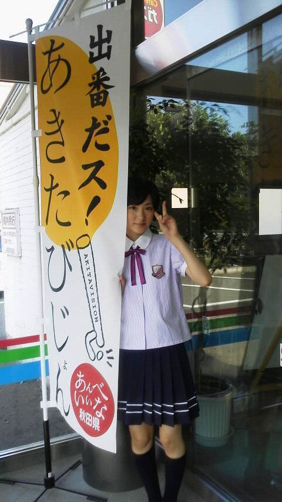

| 2012/08 02 Thu | いろいろと遅れましたが... |
まず!!
生駒は今回ふるさと秋田に行って参りましたヽ(・∀・)ノ
嬉しすぎました！

生駒は生放送のラジオ番組に出たり、夕方の県内ニュースに出たりと、本当に楽しい時間を過ごすことができました！
スタッフの皆さん、アナウンサーの皆さん!!お世話になりました！
ありがとうございました

また呼んでくださいね(笑)
あと公開収録の時、わざわざ生駒のために駆けつけて下さった皆さんありがとうございました。
100人以上の皆さんに集まっていただきました。
まさかこんなに沢山の秋田ふぁむの皆さんに来ていただけると思ってなかったので、凄く嬉しかったです!!
これからもよろしくお願いしますヽ(・∀・)ノ
あと生駒夕方のニュースに出たとき、泣いてしまったのです...
普通に質問に答えていたらいきなり家族からの手紙を読みます!!
となって
ついいろんな思いが込み上げてきました。
頑張るからね!!
よっしゃいくぞ〜ヽ(・∀・)ノ
そして今日!!
お台場合衆国のイベントに参加させて頂きました！
乃木坂４６の『人はなぜ走るのか』がFIFA U-20女子ワールドカップジャパン2012の応援ソングに選ばれました！
ありがとうございます!!
ヤングなでしこの皆さんの力に少しでもなれるように一生懸命応援したいと思います!!
同世代なのに世界を舞台に活躍しているんだな〜と思うと、生駒も目標を高く持って取り組まなければなと思います!!
そして暑い中見に来て下さったふぁむの皆様ありがとうございました！
顔結構見えたね〜(*´∀`)♪
熱中症になってませんか？
まだまだイベントはあるので、体力のこしててね

ではまたね!!
へばなっ!!
コメント(293)
2012/08/02 19:48